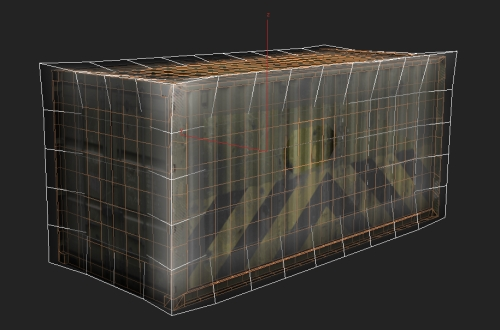
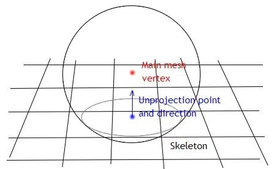
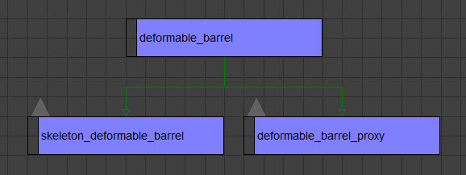
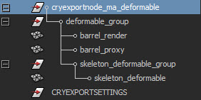
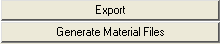
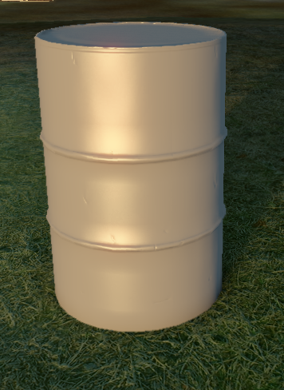
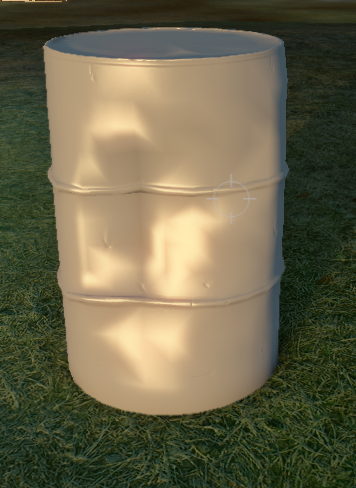

Обзор
Деформируемые объекты — это, по сути, тканевые объекты, прикрепленные к скелету. В отличие от ткани, они не движутся постоянно, а «застывают» в деформированном положении, поэтому их можно использовать для создания деформируемого металла или других гнущихся материалов. Чтобы настроить деформируемый объект, сначала убедитесь, что он достаточно мозаичный, чтобы деформация выглядела убедительно. Деформируемый объект состоит из двух узлов: сетки рендеринга, физической сетки и скелета. Скелет является фактическим деформируемым объектом, рендер-сетка и физическая сетка следуют за его деформациями аналогично тому, как сетка персонажа со шкурой следует за костями.
Скелет — это не настоящая настройка кости в пакете DCC, а просто обычная геометрическая сетка. Его форма должна быть похожа на рендермеш. То, как сетка следует за деформацией скелета, контролируется положением вершин сетки скелета. Если вершины скелета находятся за пределами сетки рендеринга, они считаются прикрепленными к объекту и не будут деформироваться. Если они находятся внутри рендермеша, сетка будет «привязана» к ним и следовать за их деформацией. Это можно использовать для управления степенью изгиба (т. е. в случае деформируемого блока вытягивание вершин скелета на краю блока за пределы рендер-меша сделает этот край «жестким» или фиксированным, в то время как остальная часть сетки полностью следует за деформацией).

Общие параметры
Существует несколько параметров для управления поведением скелета. Их необходимо ввести в пользовательские свойства узла скелета (в 3dsmax).
Недвижимость | Описание |
|---|---|
жесткость=VALUE | Устойчивость к изгибу и сдвигу (по умолчанию 10) |
твердость=VALUE | Устойчивость к растяжению (по умолчанию 10) |
max_stretch=VALUE | Если какой-либо край растянут больше, его длина увеличивается. max_stretch = 0,3 означает растяжение до 130 % от исходной длины (или на 30 % относительно исходной длины). по умолчанию 0,01 |
max_impulse=VALUE | Верхний предел всех приложенных импульсов. масса скелета по умолчанию*100 |
skin_dist=VALUE | Радиус сферы при назначении скиннинга. По умолчанию — минимальный размер ограничивающей рамки основной сетки (см. ниже). |
толщина=VALUE | Устанавливает толщину столкновения для скелета. Скелет сталкивается как тканевый объект, т. е. у него есть сферы virtual с этим радиусом вокруг каждой вершины, и он имеет меньший приоритет, чем геометрии, с которыми он сталкивается (он безоговорочно отбрасывает себя от них). Он сталкивается только с static и твердыми объектами. Он будет сталкиваться с частями того же объекта, которому он принадлежит, за исключением той, которую он облицовывает (таким образом можно установить внутри объекта защитные оболочки для предотвращения чрезмерных деформаций). Установка толщины на 0 отключает все столкновения. |
нотаприм=VALUE | Общий физический прокси-параметр, он предотвращает превращение физической сетки в примитив (коробку, цилиндр). Это особенно важно для деформируемых объектов — скелет, являющийся примитивом, приведет к сбою! |
explosion_scale=VALUE | Используется для уменьшения эффекта взрывов на деформируемый предмет. Это позволяет вам иметь видимые деформации от ударов пуль, но без слишком сильного искажения объекта взрывами. |
Объяснение процесса снятия шкуры
Для каждой вершины основного меша (как физического, так и рендеринга независимо, если они разные) вокруг него создается сфера с фиксированным радиусом и проверяется на предмет столкновений со скелетной сеткой. На основе области столкновения вычисляется средняя нормаль столкновения, и сфера «перемещается» вдоль нее, пока не найдет точку касания. Эта точка затем считается проекцией основной вершины меша на скелет и позже привязывается к ней. Если первая проверка сферы не обнаруживает столкновений, код выполняет вторую проверку со сферой в 3 раза большей. Радиус этой сферы можно настроить с помощью skin_dist.

Настройка в 3DS Max
Пример актива
Настройка
- Начните с моделирования вашего актива, как обычно.
- Закончив, создайте скелет. Обязательно назначьте этому скелету новый подматериал, для которого установлена физикализация по умолчанию. Скелетная сетка должна называться skeleton_nodename, где «имя узла» — это имя сетки рендеринга, с которой связана скелетная сетка. Убедитесь, что части скелета, которые вы хотите деформировать, находятся внутри сетки рендеринга.
- Теперь введите нужные свойства в свойствах объекта. Значения для примера металлической бочки:
- нотаприм
- skin_dist=0,2
- толщина=0,01
- жесткость=0,1
- max_stretch=10
- масса=0,5
- Теперь создайте свой физический прокси. Убедитесь, что он достаточно мозаичный, но удалите более мелкие детали, которые не требуют деформации.

- Теперь вы должны быть готовы к экспорту, поэтому откройте диалоговое окно экспорта Crytek, выберите файл .cgf и нажмите «Экспорт».
Настройка в Maya
Пример актива
Настройка
- Начните с моделирования вашего актива, как обычно.
- Закончив, создайте скелет. Обязательно назначьте этому скелету новый подматериал и убедитесь, что для него установлено значение «Физализация по умолчанию». Скелетная сетка должна называться skeleton_nodename, где «имя узла» — это имя сетки рендеринга, с которой связана скелетная сетка. Убедитесь, что части скелета, которые вы хотите деформировать, находятся внутри сетки рендеринга.
- Теперь введите нужные свойства в поле UDP. Обязательно выберите скелетную группу. Значения для примера металлической бочки:
- нотаприм
- skin_dist=0,2
- толщина=0,01
- жесткость=0,1
- max_stretch=10
- масса=0,5
- Теперь создайте свой физический прокси. Убедитесь, что он достаточно мозаичный, но удалите более мелкие детали, которые не требуют деформации.

- Теперь вы должны быть готовы к экспорту, поэтому откройте диалоговое окно экспорта Crytek, выберите файл .cgf и нажмите «Экспорт». Не забудьте настроить материалы и затем нажать «Создать файлы материалов».

Настройка в Sandbox
- Актив должен быть размещен как базовый объект или кисть для объектов static с массой не менее 1. Чем выше масса, тем труднее его деформировать.
- Убедитесь, что в настройках прокси-сервера материала установлено значение NoDraw.
- Теперь стреляйте в него! Вы должны получить те же результаты, что и ниже:
 